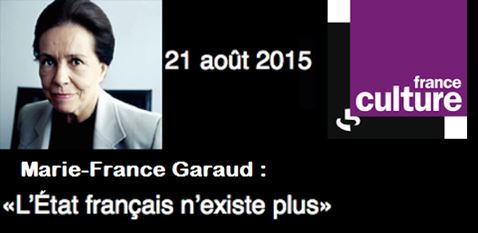
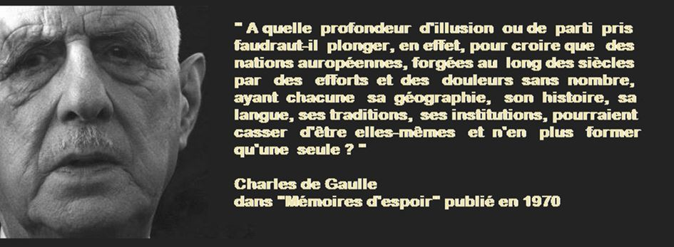

Un ami m’avait confié, en 2012, sa déception face au renvoi de Nicole Bricq par le nouveau président François Hollande. Celui-ci, m’avait-il dit, aurait à ses yeux cédé aux pressions du lobby économique et énergétique. Cet ami en tirait la conclusion que le monde politique français n’avait finalement plus les moyens de résister, face à l’influence d’un lobby économique.
Cette discussion a eu lieu il y a quelques années et, quelques semaines plus tard, un débat très intéressant a eu lieu dans l’émission « Ce soir ou jamais » de Frédéric Taddei qui m’a rappelé cette discussion que j’avais eue dans un petit café près de la place Troubnaia.
L’une des invitées de l’émission en question était Marie France Garaud, gaulliste historique. Elle a expliqué à sa manière la brève histoire politique française de l’après-guerre. Son explication avait sans doute de quoi étonner les jeunes générations. D’après elle les notions modernes de droite et gauche actuelles n’existent que depuis peu de temps. Avant, il y avait d’une part le parti du président (l’union de tous les français qui faisaient confiance au général De Gaulle), et d’autre part un certain nombre de nostalgiques des petits partis de la 4° république. Plus tard, la scène politique s’est scindée entre partisans et adversaires de l’économie marxiste sous Pompidou notamment puis encore sous Giscard. Le patriotisme gaulliste s’est lentement estompé, au fur et à mesure de la construction de l’Union Européenne.
C’est en 1981 avec l’élection de François Mitterrand que l’idée d’un rassemblement des gauches marxistes et post marxistes est apparue, le parti communiste ayant entre temps renié l’héritage soviétique lors du congrès de 1972 et fortement baissé électoralement. L’émergence d’un bloc de gauche va en conséquence directe entraîner l’ancrage d’un bloc de droite, rassemblé autour du rassemblement pour la République, le RPR, qui deviendra en 2002 l’union pour la majorité présidentielle, ou UMP.
Le bipartisme droite / gauche qui est apparu va dès le début se fonder sur une simplification quasi unique: la gauche serait ouvrière et populaire tandis que la droite serait bourgeoise et conservatrice. Pourtant dès 1999, l’évidente trahison de l’héritage Gaulliste via le bradage de la souveraineté française notamment par l’intégration dans l’Europe, va entraîner des premiers couacs. Une nouvelle ligne de fracture est apparue, et elle fractionne la droite aussi bien que la gauche. Dans chacun des deux blocs, il existe un courant européiste majoritaire, et un courant souverainiste minoritaire qui cohabitent chaotiquement.
Les souverainistes, de droite comme de gauche, s’expriment en gros de la même manière : Un bipartisme institutionnel de convenance, permettant une alternance totalement factice (les leaders des principaux partis de droite et de gauche étant d’accord sur presque tout) s’est mis en place pendant que les transferts de souveraineté de l’état français, se sont accentués en direction des instances communautaires, que ce soit sur un plan politique, économique, financier ou encore de contrôle des frontières.
Tout cela a contribué à ce que la France d’aujourd’hui ne puisse finalement plus être considérée comme une nation, tant elle est désormais totalement dépourvue de souveraineté, et ce alors que la souveraineté est l’attribut le plus essentiel de l’état. Peut-on imaginer une nation souveraine sans état souverain ?
La France de De Gaulle avait pourtant parfaitement traduit la parfaite et réalisable alchimie entre le maintien de la souveraineté nationale et la constitution d’une Europe forte : l’Europe des nations et des états. Le Général souhaitait une Europe des patries centrée sur le couple franco-allemand et tournée vers la Russie et non pas vers le binôme Anglo-saxon, Amérique / Angleterre.
L’idée de De Gaulle était simple : l’Europe devait se baser sur la coopération et sans organe supranational et reposer sur la totale souveraineté des états, en clair l’opposé absolu du processus fédéral d’intégration en cours via l’Union Européenne.
La plupart des droits souverains des états sont en voie de totale disparition en Europe. Lesquels ? Tant celui de contrôler ses frontières, de battre monnaie, de rendre justice ou de décider de faire ou non la guerre. Malheureusement pour les peuples européens, leurs élites politiques se sont volontairement engagées dans un système politique où elles n’ont même plus la maîtrise de leurs budgets. On pourrait longuement discuter du pourquoi et comment en est-on arrivé là.
De Gaulle avait pourtant résumé la situation, alors qu’à la fin de sa carrière ce bipartisme impuissant se profilait déjà. Il avait dit: « le drame de la France c’est que la gauche n’est plus populaire, et que la droite n’est plus nationale ».
Alors que l’intégration européenne s’est faite en dissolvant la souveraineté des états, la Russie depuis le début de ce siècle semble pour l’instant suivre une autre voix. On a beaucoup parlé dans les médias étrangers de la « méthode forte à la Russe », du non-respect des droits de l’homme et aussi de la violence avec laquelle l’état a fait la guerre en Tchétchénie. Mais on a peu parlé du fait que cette guerre était avant un conflit interne et régional de restauration de la souveraineté fédérale pour écraser le risque séparatiste. Un risque séparatiste qui guette nombre d’états européens aujourd’hui. On parle également trop peu de la politique économique russe avec son refus obsessionnel de l’endettement extérieur, pourtant nul ne doute que les générations futures en Russie sauront remercier leurs élus politiques d’aujourd’hui, au moins à ce sujet.
Quant aux hommes d’affaires emprisonnés pour des détournements (certains des fameux oligarques), ils illustrent un message assez clair : en Russie aujourd’hui, malgré tous les travers que cela peut engendrer, c’est le politique qui prime sur l’économie et non l’inverse. A ce titre, la leçon de Pikalevo de 2009 pourrait faire office de Jurisprudence. Les gigantesques plans de restructuration de l’armée ou le fait que les deux plus grosses compagnies énergétiques de la planète soient nationalisées traduisent du reste bien le fait que l’état russe souhaite rester entièrement souverain face aux capitalistes russes mais aussi face aux compagnies multinationales. Quant au « multipartisme à la russe », qui se traduit par la gouvernance d’une seule structure politique, trans-courants, mais que l’on pourrait appeler le parti de la majorité, on pourrait le comparer au parti Gaulliste en France, au moment de la fondation de la V° république.
Une comparaison qui n’est pas nouvelle, car le visionnaire Emmanuel Todd envisageait dès 2002 cette perspective d’un gaullisme à la russe dans son ouvrage Après l’empire : « A l’heure du débat sur la globalisation et l’interdépendance universelle, la Russie pourrait émerger, selon un scénario intégrant toutes les hypothèses les plus favorables, comme une démocratie immense, équilibrant ses comptes extérieurs et pourvue d’une autonomie énergétique, bref, dans un monde dominé par les États-Unis, l’incarnation d’un rêve gaulliste ».
Partager cette page